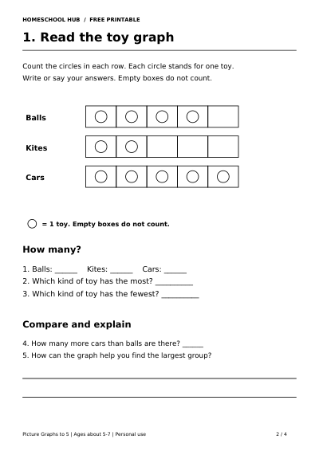

Free printable
Read a Picture Graph to 5
Ages about 5–7
Introduce picture graphs with one circle representing one toy. Count up to 5 in each group, compare the most and fewest, then find equal groups.
Four A4 pages: a parent model, a graph-reading activity, a graph to complete and answers with the completed graph. The toy collections are made up; no personal information is needed.
Try 5–10 minutes together. Your child should be able to count to 5. Read the labels and questions aloud and accept spoken answers. An adult can draw the circles if needed.
You need a pencil. Print pages 2–3 on A4 in black and white. Count circles, not empty boxes: one circle always stands for one toy.
For counting support, try Numbers 1–10 or Subitising to 5.
